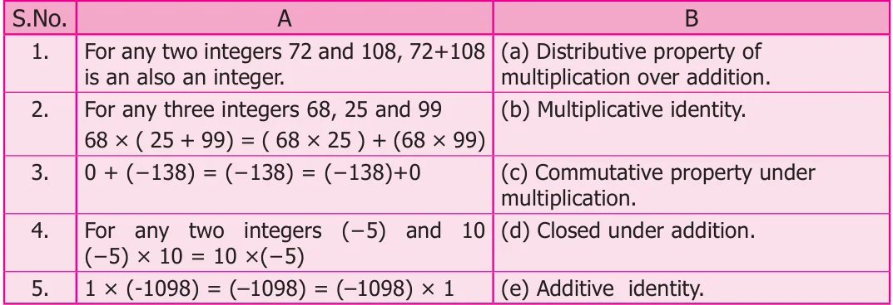

- (iv)If Kavimaan helps Tamizh Nambi and they are able to produce 7 pages per day,
how many days will it take to recreate the work lost?
- (v)Tamizh Nambi pays kavimaan ₹ 100 per page for his help. How much money
does kavimaan receive?
- 6.Add 2 to me. Then multiply by 5 and subtract 10 and divide now by 4 and I will give
you 15! Who am I?
- 7.Kamatchi, a fruit vendor sells 30 apples and 50 pomegranates. If she makes a profit
of ₹ 8 per apple and loss ₹ 5 per pomegranate, what will be her overall profit(or)loss?
- 8.During a drought, the water level in a dam fell 3 inches per week for 6 consecutive
weeks. What was the change in the water level in the dam at the end of this period?
- 9.Buddha was born in 563 BC(BCE) and died in 483 BC(BCE). Was he alive in
500 BC(BCE)? and find his life time. (Source: Compton’s Encylopedia)
- 1.What Should be added to \(- 1\) to get 10?
- 2.\(- 70 + 20 = - 10\)
- 3.Subtract 94860 from ( \(- 86945)\)
- 4.Find the value of ( \(- 25)+60+( - 95)+( - 385)\)
- 5.Find the sum of ( \(- 9999)( -\) 2001)and ( \(- 5999)\)
- 6.Find the product of ( \(- 30) \times\) ( \(- 70) \times 15\)
- 7.Divide ( \(- 72)\) by 8
- 8.Find two pairs of integers whose product is +15 .
- 9.Check the following for equality
- (i)(11+ 7)+10 and 11+(7 +10)
- (ii)\((8 - 13) \times 7\) and \(8 - (13 \times 7)\)
- (iii)[( \(- 6) - +( 8)] \times\) ( \(- 4)\) and ( \(- 6) - [8 \times\) ( \(- 4)]\)
- (iv)\(3 \times\) [( \(- 4)+( - 10)]\) and \([3 \times\) ( \(- 4)+ 3 \times\) ( \(- 10)]\)
- 10.Kalaivani had ₹ 5000 in her bank account on 01.01.2018. She deposited ₹ 2000
in January and withdrew ₹ 700 in February. What was Kalaivani’s bank balance on 01.04.2018, if she deposited ₹ 1000 and withdrew ₹ 500 in March?
- 11.The price of an item x increases by ₹ 10 every year and an item y decreases by
₹ 15 every year. If in 2018, the price of x is ₹ 50 and y is ₹ 90, then which item will be costlier in the year 2020.
- 12.Match the statements in column A and column B

Challenge Problems
- 13.Say true or false.
- (i)The sum of a positive integer and a negative integer is always a positive integer.
- (ii)The sum of two integers can never be zero.
- (iii)The product of two negative integers is a positive integer.
- (iv)The quotient of two integers having opposite sign is a negative integer.
- (v)The smallest negative integer is \(- 1\).
- 14.An integer divided by 7 gives a quotient \(- 3\). What is that integer?
- 15.Replace the question mark with suitable integer in the equation
\(72+( - 5) -\) ? \(= 72\) .
- 16.Can you give 5 pairs of single digit integers whose sum is zero?
- 17.If \(P = - 15\) and \(Q = 5\) find (P - Q) \(\div\) (P + Q)
- 18.If the letters in the English alphabet A to M represent the number from 1 to 13
respectively and N represents 0 and the letters O to Z correspond from \(- 1\) to \(- 12\) , find the sum of integers for the names given below. For example,
\(MATH \to\) sum \(\to 13+1 - 6+8 = 16\)
- (i)YOUR NAME
- (ii)SUCCESS
- 19.From a water tank 100 litres of water is used every day. After 10 days there is 2000
litres of water in the tank. How much water was there in the tank before 10 days?
- 20.A dog is climbing down into a well to drink water. In each jump it goes down 4 steps.
The water level is in 20 step. How many jumps does the dog take to reach the water level?
th
- 21.Kannan has a fruit shop. He sells 1 dozen banana at a loss of ₹ 2 each because it may
get rotten next day. What is his loss?
- 22.A submarine was situated at 650 feet below the sea level. If it descends 200 feet,
what is its new position?
- 23.In a magic square given below each row, column and diagonal should have the same
sum, Find the values of x, y and z.
\(1 - 10 x y - 3 - 2 - 6 4 z\)